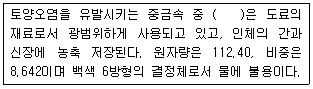
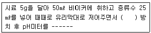
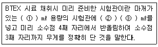
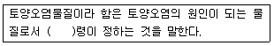

토양환경기사 (2005-05-29 기출문제)
1과목: 토양학개론
1. 토양에 존재하는 리그닌의 분해에 주로 참여하는 미생물 종류의 조합으로 가장 알맞는 것은?
- 사상균, 조류
- 조류, 효모
- 효모, 방선균
- 방선균, 사상균
(정답률: 알수없음)

2. 지하수오염의 특징이 아닌 것은?
- 흐름의 완만성
- 흐름방향의 모호성
- 원상복귀의 어려움
- 오염원의 확인용이
(정답률: 알수없음)
3. 토양 또는 암석(대수층)에서 중력에 의해 배출되는 수량과 암석의 부피의 비율로 정의되는 것은?
- 비양수율(specific capacity)
- 간극률(porosity)
- 비유출율(specific yield)
- 동수경사율(hydraulic gradient)
(정답률: 알수없음)
4. 다음 오염물질 중 LNAPL이 아닌 것은?
- 휘발유
- 이소프로필알코올
- 트리클로로에틸렌
- 톨루엔
(정답률: 알수없음)
5. 다음 ( )안에 들어갈 중금속으로 가장 적당한 것은?

- 카드뮴
- 비소
- 납
- 수은
(정답률: 알수없음)
6. 다음 토양에서 질소의 순환에 대한 설명 중 맞는 것은?
- 질산화작용에 의해 생성된 질산이온 또는 토양에 첨가된 질산이온은 토양에 흡착되어 이동성이 작은 양이온이 된다.
- 토양 유기물의 탈질반응은 PH 7.5 ~ 8.3범위의 약알칼리 조건을 필요로 한다.
- 유기물의 NO2-, NO3-로의 변환을 질소의 유기화 과정이라 한다.
- 표토부근의 토양내 존재하는 총질소의 90%이상이 유기질소 형태로 존재한다.
(정답률: 알수없음)
7. 주유소등 지하저장시설에 의한 토양오염을 방지하기 위한 주요기술과 가장 거리가 먼 것은?
- 저장탱크 및 배관 부식산화방지 기술
- 모니터링 기술
- 고형화/안정화 처리기술
- 생물활성대에 의한 처리기술
(정답률: 알수없음)
8. 토양오염은 오염물질의 특이성에 따라 다르게 나타난다. 유기오염물질의 특성인자와 가장 거리가 먼 것은?
- 증기압
- 용해도적
- 헨리상수
- 분해상수
(정답률: 알수없음)
9. 부식질(humic substances)을 구성하고 있는 물질 중 중간 내지 고분자의 산성물질로서 무정형이며 색깔이 황갈색-흑갈색으로 부식질의 주요부분을 구성하는 것은?
- 부식탄(humin)
- 풀브산(fulvic acid)
- 히마토멜란산(hymatomelanic acid)
- 부식산(humic acid)
(정답률: 알수없음)
10. 세계 토양목의 구분중 '히스토졸(Histosols)'에 관한 설명으로 가장 알맞는 것은?
- 미발달 토양
- 유기질 늪지 토양
- 건조지역의 토양
- 화산재 토양
(정답률: 알수없음)
11. 어떤 유기용제 50리터가 토양으로 유출되었다. 이로 인해 발생된 오염 지하수의 부피는 100m3이었고 지하수내 유기용제의 농도는 90mg/L이었다. 유기용제의 밀도가 0.9g/mL일 때 토양내 잔존하는 유기용제의 부피(리터)는? (단, 유기용제의 분해는 고려하지 않음)
- 25
- 30
- 35
- 40
(정답률: 알수없음)
12. 토양생성작용을 거의 받지 않은 모재층으로서 칼슘, 마그네슘 등의 탄산염이 교착상태로 쌓여 있거나 위에서 녹아 내려온 물질이 엉키어 쌓인 토양층위의 구성은?
- B층
- C층
- O층
- R층
(정답률: 알수없음)
13. 토양내 비소의 이동성에 영향을 미치는 토양내 성분과 가장 거리가 먼 것은?
- 칼슘
- 망간
- 알루미늄
- 철
(정답률: 알수없음)
14. 다음 중 1:1형 광물로서 카올리나이트(kaolinite)와 같은 Si층 사이에 물 분자층 하나가 끼어 있어 기저면 간격이 넓어져 있으며 이를 가열하면 물이 비가역적으로 빠져 나가는 것은?
- 할로이사이트(halloysite)
- 카올린(kaolin)
- 일라이트(illite)
- 사문석
(정답률: 알수없음)
15. 다음의 토양의 형태론적 분류 체계(단위)중 가장 큰 것은?
- series
- family
- great group
- suborder
(정답률: 알수없음)
16. 흡습수 외부에 표면장력과 중력이 평형을 유지하여 존재하는 물로 pF 2.54‾4.5 사이의 수분을 무엇이라 하는가? (단, 토양수분의 물리적인 분류 기준)
- 중력수
- 결합수
- 흡착결합수
- 모세관수
(정답률: 알수없음)
17. 대수층의 특성 조사를 위해 사용되는 추적자 물질(tracer)의 조건으로 맞지 않는 것은?
- 물에 대한 용해도가 낮은 것
- 검출이 쉬운 것
- 지하수에 침전, 흡착, 분해가 되지 않을 것
- 독성이 없을 것
(정답률: 알수없음)
18. 토양생성작용중 laterite화 작용에 관한 설명으로 틀린것은?
- 주로 한냉 건조한 기후 조건 하에서 일어난다.
- 염기류나 규산이 용탈되고 철 및 알루미늄의 산화물이 잔류해서 상대적으로 많아지는 과정을 말한다.
- SiO2/Al2O3 또는 SiO2/Fe2O3 의 비가 낮은 토양이 생성된다.
- 철과 알루미늄의 집적물이 표층에 누출되어 햇빛에 의해 경화된 것을 laterite라고 한다.
(정답률: 알수없음)
19. 가축분뇨나 두엄 등이 지하수에 유입되어 이들 지하수를 음용할 경우 주로 어린아이들에게 청색증을 일으키는 물질은?
- 인산염
- 황산염
- 질산성질소
- 염화칼슘
(정답률: 알수없음)
20. 대수층에 관한 설명으로 틀린 것은?
- 비피압대수층의 지하수를 자유면 지하수 또는 천층수라고 한다.
- 비피압대수층의 채수방법은 굴착정으로 한다.
- 피압대수층의 지하수는 수온과 수질의 계절적 변화가 작다.
- 피압대수층은 제1불투수층과 제2불투수층 사이의 대수층을 말한다.
(정답률: 알수없음)
2과목: 토양 및 지하수 오염조사기술
21. 흡광광도법에서 사용하는 흡수셀에 대한 설명 중 틀린것은?
- 유리제는 주로 근적외부 파장범위에서 사용된다.
- 유리제는 주로 가시부 파장범위에서 사용된다.
- 석영제는 자외부 파장범위에서 사용된다.
- 플라스틱제는 근자외부 파장범위에서 사용된다.
(정답률: 알수없음)
22. 다음은 토양의 pH를 측정하는 방법에 대한 설명이다. ( )안에 알맞는 내용은?

- 15분
- 30분
- 1시간
- 2시간
(정답률: 알수없음)
23. 토양시료는 시료채취봉이 들어있는 타격식이나 나선형식의 토양시추 장비를 이용하여 채취한다. 이때 시료채취봉의 직경기준은? (단, 토양오염유발시설 지역 기준)
- 2.5 ㎝ 이상
- 2.0 ㎝ 이상
- 1.5 ㎝ 이상
- 1.0 ㎝ 이상
(정답률: 알수없음)
24. 시료의 채취 및 보관에 대한 설명이 부적합한 내용은? (단, 일반지역 )
- 표토층이라함은 0 ∼15 cm의 깊이를 말한다.
- 시료는 토양시료 채취기로 약 0.5 kg 채취한다.
- 수은과 같은 중금속 시험용 시료는 폴리에틸렌 봉지에 넣어 보관한다.
- 토양시료 채취기가 없을 때는 모종삽을 사용할 수 있다.
(정답률: 알수없음)
25. 토양오염공정시험방법에서 저장물질이 없는 지하매설저장 시설의 누출검사방법 중 가압시험법에서 누출여부의 판정기준으로 가장 적절한 것은?
- 안정된 압력 확인 후 30분 동안 측정된 압력강하가 안정된 시험압력의 10%를 초과할 경우에는 불합격
- 안정된 압력 확인 후 30분 동안 측정된 압력강하가 안정된 시험압력의 15%를 초과할 경우에는 불합격
- 안정된 압력 확인 후 50분 동안 측정된 압력강하가 안정된 시험압력의 10%를 초과할 경우에는 불합격
- 안정된 압력 확인 후 50분 동안 측정된 압력강하가 안정된 시험압력의 15%를 초과할 경우에는 불합격
(정답률: 알수없음)
26. 다음 중 ( )의 내용이 바르게 짝지어 진 것은?(단, 토양오염유발시설지역)

- ① : 30 - ② : 메틸알코올 - ③ : 10
- ① : 50 - ② : 메틸알코올 - ③ : 20
- ① : 50 - ② : 사염화탄소 - ③ : 10
- ① : 30 - ② : 사염화탄소 - ③ : 20
(정답률: 알수없음)
27. 토양오염공정시험방법에서 상온이라 함은 별도의 온도에 대한 표시가 없는 경우 몇 ℃ 범위를 말하는가?
- 1 ~ 35℃
- 15 ~ 25℃
- 4 ~ 15℃
- 20 ~ 30℃
(정답률: 알수없음)
28. 가스크로마토그래프분석에 사용되는 검출기중 인과 유황화합물을 선택적으로 분석하기에 적절한 검출기는?
- 열전도도 검출기(TCD)
- 불꽃이온화 검출기(FID)
- 전자포획형 검출기(ECD)
- 불꽃광도형 검출기(FPD)
(정답률: 알수없음)
29. 토양오염공정시험법 중 비소시험법에서 시료에 염화제일주석을 넣는 이유는? (단, 원자흡광광도법 기준)
- 시료중의 비소를 3가비소로 환원
- 시료중의 비소를 6가비소로 산화
- 시료중의 비소를 비화수소로 환원
- 시료중의 비소를 비화수소로 산화
(정답률: 알수없음)
30. 조제한 pH 표준액은 경질 유리병 또는 폴리에틸렌병에 보관한다. 보통 산성 표준액은 몇 개월 이내에 사용해야 하는가?
- 1개월
- 2개월
- 3개월
- 6개월
(정답률: 알수없음)
31. 저장물질이 있는 지하매설저장시설의 누출검사와 관련한 설명 중 옳지 않은 것은?
- 기상부의 누출검사는 20℃에서 점도가 100cSt 미만, 내용적이 10,000L 미만의 액체를 저장하는 지하매설 저장시설에 적용한다.
- 기상부의 누출검사시 지하매설저장시설내의 기상부 높이는 400mm 이상이어야 한다.
- 기상부의 누출검사시 가솔린을 저장하는 시설에 있어서 기상부의 공간면적은 3,000L 이상이어야 한다.
- 액상부의 누출검사는 시설의 액량이 저장시설 높이의 60-90% 범위인 경우에 적용한다.
(정답률: 알수없음)
32. 지하매설저장시설의 누출시험에서 주의할 사항 중 옳지 않는 것은?(단, 저장물질이 없는 지하매설저장시설, 가압시험법)
- 시험기간 동안 화기의 사용을 금한다.
- 기상변화가 심할 때는 정도에 따라 보정하여 시험을 하여야 한다.
- 시험기간 동안 진동 등 압력변화에 영향을 주는 경우가 없도록 한다.
- 누출여부 판단을 위한 지하매설저장시설의 가압을 위해서 과도한 속도로 압력상승하지 않도록 한다.
(정답률: 알수없음)
33. 원자흡광광도법 적용시 사용되는 다음의 용어 설명 중 옳지 않은 것은?
- 공명선(Responance line): 원자가 외부로부터 빛을 흡수했다가 다시 먼저 상태로 돌아갈 때 방사하는 스펙트럼선
- 다원료 불꽃(Fuel-rich Flame): 조연성 가스/가연성 가스의 비를 크게 한 불꽃
- 중공음극 램프(Hollow Cathode Lamp): 원자흡광분석의 광원이 되는 것으로 목적원소를 함유하는 중공 음극 한 개 또는 그 이상을 저압의 네온과 함께 채운 방전관
- 분무기(Nebulizer or Atomizer): 시료를 미세한 입자로 만들어 주기 위하여 분무하는 장치
(정답률: 알수없음)
34. 미가압 시험법에 사용하는 압력계의 정밀도는? (단, 저장물질이 있는 지하매설저장시설, 기상부 시험법)
- 최소눈금이 1㎜H2O를 읽을 수 있는 압력계
- 최소눈금이 5㎜H2O를 읽을 수 있는 압력계
- 최소눈금이 10㎜H2O를 읽을 수 있는 압력계
- 최소눈금이 50㎜H2O를 읽을 수 있는 압력계
(정답률: 알수없음)
35. 6가 크롬의 분석방법으로 적합치 않은 것은?
- 원자흡광광도법
- 흡광광도법
- 유도결합플라스마 발광광도법
- 이온전극법
(정답률: 알수없음)
36. 흡광광도법을 이용하여 카드뮴을 정량하려 한다. 정량과정에서 생성된 적색의 카드뮴 착염을 사염화탄소로 추출하여 적용하는 흡광도 측정파장은?
- 360nm
- 440nm
- 520nm
- 610nm
(정답률: 알수없음)
37. 원자흡광광도법을 이용하여 카드뮴을 분석할 때의 내용과 가장 거리가 먼 것은?
- 측정 파장은 228.8 nm 이다.
- 시안화칼륨이 존재하는 알칼리에서 디티죤과 반응 시킨다.
- 유효측정농도는 0.002㎍/g 이상으로 한다.
- 시료중에 알칼리금속의 할로겐 화합물을 다량 함유하는 경우에는 분자흡수나 광산란에 의하여 오차가 발생한다.
(정답률: 알수없음)
38. 공정시험방법에 제시된 용어에 대한 설명으로 틀린 것은?
- 가스체의 농도는 표준상태( 0oC, 760mmH2O, 상대습도 0 % )로 환산 표시한다.
- 방울수라 함은 20 oC 에서 정제수 20방울을 적하할 때, 그 부피가 약 1 ㎖가 되는 것을 뜻한다.
- 진공(감압)이라 함은 따로 규정이 없는 한 15mmH2O 이하를 말한다.
- '약'이라 함은 기재된 양에 대하여 ±10% 이상의 차가 있어서는 안된다.
(정답률: 알수없음)
39. 수분함량 측정시 1⑤∼110℃ 건조기 안에서의 토양 건조시간은? (단, 시료와 증발접시를 수용상에서 수분을 거의 날려보낸후 건조기 안에서의 건조시간 기준)
- 1시간
- 2시간
- 3시간
- 4시간
(정답률: 알수없음)
40. 유기인을 가스크로마토그래피법으로 정량화할 때 헥산으로 추출할 경우 메틸디메톤의 추출율이 낮아질 수 있는데 이때는 어떤 추출액을 사용해야 하는가?
- 디클로로메탄과 헥산의 15:85 혼합액을 사용한다.
- 디클로로메탄과 헥산의 85:15 혼합액을 사용한다.
- 클로로포름과 헥산의 15:85 혼합액을 사용한다.
- 클로로포름과 헥산의 85:15 혼합액을 사용한다.
(정답률: 알수없음)
3과목: 토양 및 지하수 오염정화 기술
41. 토양증기추출기법(soil vapor extraction)의 효과, 적용에 관한 설명으로 틀린 것은?
- 헨리상수가 0.01 이상인 휘발성 오염물질에 적용하는 것이 효과적이다.
- 미세토양이나 수분함량이 높은 토양은 공기의 통과성을 저해하므로 증기압을 높여야 한다.
- 유기물함량이 높거나 매우 건조한 토양은 VOCs의 흡착능력이 낮아 제거효율이 높다.
- 중금속, PCBs의 정화에는 부적합하다.
(정답률: 알수없음)
42. 기타 토양복원기술과 비교하여 토양세척(soil washing) 공정의 장점으로 틀린 것은?
- 부지내에서 유해오염물의 이송 없이 바로 처리할 수 있다.
- 적용 가능한 오염물 종류의 범위가 넓다.
- 오염토양 부피의 단시간내의 효율적인 급감으로 2차 처리비용이 절감된다.
- 외부환경의 조건변화에 대한 영향이 적은 개방형 공정이다.
(정답률: 알수없음)
43. 지하저장창고로부터 디젤이 유출되어 토양이 오염되었다. 오염부지평가결과 오염누출지역의 토양밀도가 1.8 g/cm3, 오염농도가 4000 mg/kg, 오염범위가 10 m × 25 m × 3 m이라면 오염된 토양내 디젤의 양은?
- 1350 kg
- 5400 kg
- 6500 kg
- 8600 kg
(정답률: 알수없음)
44. 전체봉합형태인 키드인슬러리월(keyed-in slurry wall)의 수평적 도식에 따른 장, 단점으로 틀린 것은?
- 오염물로부터 지하수흐름의 완전한 우회 가능
- 오염물질 누출의 최소화
- 비용이 많이 소요될 가능성이 있음
- 적용 가능한 폐기물의 범위가 한정됨
(정답률: 알수없음)
45. 황화나트륨(Na2S)을 활용한 오염토양의 불용화 처리 기술(화학적처리)을 틀리게 설명한 것은?
- 수용성 납화합물이 존재하는 오염토양에 황화나트륨을 첨가하여 황화납을 생성시켰다.
- pH를 저하시키지 않도록 조치한 후 황화나트륨을 첨가하여 카드뮴화합물을 황화카드뮴으로 변환하였다.
- 황화나트륨이 강한 환원제 역할을 하므로 6가 크롬을 3가 크롬으로 환원처리 하였다.
- 오염토양에 존재하는 수용성 수은화합물을 처리하기 위하여 황화나트륨을 첨가하여 처리하였다.
(정답률: 알수없음)
46. 토양오염확산방지기술인 고형화와 안정화의 장점이라 볼 수 없는 내용은?
- 폐기물 표면적을 증가시켜 안정화속도를 빠르게 한다.
- 폐기물내 오염물질이 독성형태에서 비독성형태로 변형 된다.
- 폐기물의 용해성이 감소한다.
- 폐기물의 취급이 용이해진다.
(정답률: 알수없음)
47. 1,1,1-trichloroethane (1,1,1-TCE)은 지중에서 분해되며, 반감기가 180일이다. 이 오염물질의 분해 반응속도가 1차 반응이라고 가정할 때, 초기 오염농도의 30%가 제거되는데 소요되는 기간은?
- 약 73 day
- 약 83 day
- 약 93 day
- 약 103 day
(정답률: 알수없음)
48. 토양증기추출법(SVE)과 bioventing(BV)을 상호 비교한 것이다. 다음 중 설명이 잘못된 것은?
- SVE은 상대적으로 많은 양의 공기가 공급되어야 한다.
- 현장부지의 공기투과 계수는 두 기술 모두 1 x 10-4 cm/s 이상이면 적절한 수준이다.
- BV기술의 최적운전을 위해서는 포장용수량의 75% 정도의 토양수분이 함유되는 것이 좋다.
- 추출효율을 높이기 위해 SVE는 주로 오염지역 외곽에 BV는 오염지역내에 추출정을 설치한다.
(정답률: 알수없음)
49. 독립영양미생물(화학합성 자가영양)의 탄소원-에너지원으로 알맞는 것은?
- 유기탄소-유기물의 산화환원반응
- 유기탄소-빛
- 이산화탄소-무기물의 산화환원반응
- 이산화탄소-빛
(정답률: 알수없음)
50. 토양증기추출법의 적용시 배출가스 제어시스템(배출가스 정화)에 대한 설명 중 틀린 것은?
- 흔히 사용되고 있는 방법은 활성탄 흡착법이다.
- 활성탄 흡착법은 보통 오염농도가 1,000 ppm 이상일 때 효과적인 것으로 알려져 있다.
- 배출되는 배가스의 습도가 상대습도로 50% 이상일 때는 사전에 습도를 낮추어준다.
- 유입가스의 온도가 130oF 이상일 때는 열교환기를 설치하여 냉각시켜줄 필요가 있다.
(정답률: 알수없음)
51. 토양세척기법(soil washing)이 가장 효과적인 토양종류는 어느 것인가?
- 점토가 주를 이루는 토양
- 모래와 자갈이 고루 섞인 토양
- 실트와 모래가 고루 섞인 토양
- 점토와 실트가 고루 섞인 토양
(정답률: 알수없음)
52. TCE (Trichloroethylene)으로 오염된 지하수를 오존으로 처리하고자 한다. 처리대상 지하수로 예비실험을 한 결과 1.4 mg/L-min의 오존으로 1시간 처리시 환경기준에 적합한 제거율을 보였다. 지하수 오염농도가 150 kg/L 이고 처리 해야할 지하수의 유량이 760 L/min일 경우 필요한 오존의 총 양은?
- 약 51 kg /day
- 약 92 kg/day
- 약 123 kg/day
- 약 136 kg/day
(정답률: 알수없음)
53. 오염토양 내에 인위적으로 산소를 공급하여 토양 내에 존재하는 토착 미생물의 활성을 촉진시켜 생분해도를 극대화하여 오염토양을 정화하는 기법은?
- 공기분사기법 (air sparging)
- 토양증기추출기법 (soil vapor extraction)
- 토양세척(Soil washing)
- 바이오벤팅기법 (bioventing)
(정답률: 알수없음)
54. 다음 중 식물정화법의 장점이라 볼 수 없는 것은?
- 비용이 적게 든다.
- 다양한 오염물질에 적용 가능하다.
- 다른 방법에 비해 효과가 빠르다.
- 넓은 부지의 오염지역에 적용이 가능하다.
(정답률: 알수없음)
55. 식물정화능력이 높은 대표식물종을 가장 알맞게 묶은 것은?
- 소나무, 호두나무, 측백나무
- 소나무, 분비나무, 구상나무
- 포플러나무, 해바라기, 벼과 식물
- 쇄기풀, 떡갈나무, 굴피나무
(정답률: 알수없음)
56. 오염토양의 열처리 기술중 열탈착기술에 대한 설명으로 알맞지 않는 것은?
- 열탈착 기술로 처리하는 동안 생성되는 다이옥신류 및 푸란은 응축 회수가 가능하다.
- 열탈착 기술은 토양으로부터 검출한계 이하로 휘발성 유기화합물의 제거가 가능하다.
- 열탈착 기술은 소각공정에 비하여 가스량이 상대적으로 적게 발생된다.
- 열탈착 기술은 다양한 수분함량과 오염농도를 가진 여러 종류의 토양에 적용이 가능하다.
(정답률: 알수없음)
57. 고형화/안정화된 폐기물의 위해성평가를 위한 용출능 평가 시험법 중 주기적으로 용출액의 pH를 특정 최대산첨가량까지 맞춘다는 점을 제외하고는 TCLP법과 유사한 것은?
- CLT 시험법
- MEP 시험법
- MWEP 시험법
- EP TOX 시험법
(정답률: 알수없음)
58. 동전기정화기법에서는 토양내에 전기를 가하게 되면 동전 기의 작용에 의하여 토양내의 오염수, 오염물질, 오염입자가 이동하게 되는데 이때 적용되는 이론과 가장 거리가 먼것은?
- 전기삼투이론
- 전기이동이론
- 전기절연이론
- 전기영동이론
(정답률: 알수없음)
59. 바이오필터(biofilter)를 이용하여 휘발성 유기물을 효과적으로 처리하기 위한 운전조건으로 알맞지 않는 것은?
- 충전재의 종류에 따라 다르지만 퇴비의 경우 30-55% 의 수분함량이 되도록 조절한다.
- 압력손실은 충전재의 생분해정도에 따라 점차 감소한다.
- 미생물의 성장에 적합하도록 pH를 6-8정도의 범위로 유지시킨다.
- 바이오필터내에 배가스가 체류하는 시간은 퇴비의 경우 30초 이상 되어야 한다.
(정답률: 알수없음)
60. 다음의 토양복원기술 중 원위치(in-situ) 정화기술과 가장 거리가 먼 것은?
- 토양증기추출법(Soil Vapor Extraction)
- 생분해법(Biodegradation)
- 유리화(Vitrification)
- 토지경작법(Landfarming)
(정답률: 알수없음)
4과목: 토양 및 지하수 환경관계법규
61. 토양환경평가를 수행함에 있어서 토양오염 유발시설의 주변지역까지 포함하여 평가할 수 있는데 여기서 말하는 주변지역의 범위기준으로 적절한 것은?
- 토양오염유발시설 부지의 경계선으로부터 100미터 안의 지역
- 토양오염유발시설 부지의 경계선으로부터 200미터 안의 지역
- 토양오염유발시설 부지의 경계선으로부터 250미터 안의 지역
- 토양오염유발시설 부지의 경계선으로부터 300미터 안의 지역
(정답률: 알수없음)
62. 다음 괄호 안에 알맞은 단어는?

- 대통령
- 총리
- 환경부
- 건설교통부
(정답률: 알수없음)
63. 특정토양오염유발시설의 종류와 가장 거리가 먼 것은?
- 석유류 저장시설
- 송유관 시설
- 유독물 저장시설
- 방사성물질 저장시설
(정답률: 알수없음)
64. 특정토양오염유발시설의 설치자는 토양오염방지를 위한 시설을 설치하여야 함에도 불구하고 이를 위반하여 토양 오염방지시설을 설치하지 아니한 경우, 벌칙기준으로 적절한 것은?
- 3년이하의 징역 또는 1500만원 이하의 벌금에 처한다.
- 2년이하의 징역 또는 1000만원 이하의 벌금에 처한다.
- 1년이하의 징역 또는 500만원 이하의 벌금에 처한다.
- 6월이하의 징역 또는 300만원 이하의 벌금에 처한다.
(정답률: 알수없음)
65. 시장, 군수, 구청장은 특정 토양오염유발시설의 설치자가 토양오염방지설치를 하지 아니하거나 그 기준에 적합하지 아니한 경우 또는 토양오염검사결과가 우려기준을 초과하는 경우에는 이행기간을 정하여 그 시정 등 필요한 조치를 명할 수 있는 데, 최초(연장하기 전)로 정하여지는 이행 기간은 얼마인가?
- 1년 이내
- 2년 이내
- 3년 이내
- 5년 이내
(정답률: 알수없음)
66. 토양보전대책지역에서 실시하는 일반적인 오염토양개선 사업의 종류와 가장 거리가 먼 것은?(단, 기타 시,도지사가 필요하다고 인정하는 사업은 고려하지 않음)
- 오염물질의 흡수력이 강한 식물식재사업
- 오염된 수로의 준설사업
- 오염토양의 위생적 매립사업
- 오염토양의 열분해 등 정화사업
(정답률: 알수없음)
67. 지하수 개발桀이용준공신고서에 첨부할 서류가 아닌 것은?
- 준공시설도
- 수질검사서
- 현장사진
- 시추주상도
(정답률: 알수없음)
68. 특정토양오염유발시설의 토양오염도 검사주기로 알맞는 것은?(단, 토양오염방지시설을 설치한 경우이며 저장시설 설치후 5년에서 15년까지의 기간중 )
- 매 1년에 1회
- 매 2년에 1회
- 매 3년에 1회
- 매 5년에 1회
(정답률: 알수없음)
69. 다음 중 수질검사 대상기준으로 알맞지 않는 지하수는?
- 청소용, 조경용, 공사용, 소방용 등 보건위생상 지장이 없는 용도로 이용하는 생활용수의 경우를 제외한 생활용수로서 1일 양수능력이 30톤 이상인 경우
- 공업용수로서 1일 양수능력이 30톤 이상인 경우
- 농업용수로서 1일 양수능력이 50톤 이상인 경우
- 어업용수로서 1일 양수능력이 100톤 이상인 경우
(정답률: 알수없음)
70. 석유계총탄화수소(TPH)의 나지역 토양오염우려기준은? (단위: mg/kg) (단, 나지역은 지적법에 의한 지목이 공장용지, 도로 철도용지 및 잡종지 )
- 8
- 40
- 2000
- 5000
(정답률: 알수없음)
71. 다음 중 지하수 개발ㆍ이용자의 수질검사 절차에 대한 설명으로 틀린 것은?
- 수질검사를 받고자 하는 자는 시장ㆍ군수에게 수질검사를 신청하여야 한다.
- 수질검사 신청을 접수한 때에는 수질검사를 위한 시료채취기간을 정하여 시료채취 실시 3일전까지 검사를 받을 자에게 이를 통보하여야 한다.
- 시료채취를 한 후 시료를 봉인하여 수질검사 신청인에게 인계하여야 한다.
- 시료를 인계받은 후 24시간 이내에 수질검사전문기관에 검사를 의뢰하여야 한다.
(정답률: 알수없음)
72. 오염토양개선사업의 전부 또는 일부의 실시의 명을 받은 오염원인자가 실시명령을 이행하지 않은 경우의 법적 처벌기준은?
- 5년 이하의 징역 또는 3천만원이하의 벌금에 처함
- 3년 이하의 징역 또는 2천만원이하의 벌금에 처함
- 2년 이하의 징역 또는 1천만원이하의 벌금에 처함
- 1년 이하의 징역 또는 5백만원이하의 벌금에 처함
(정답률: 알수없음)
73. 지적법에 의한 지목이 과수원용지로 분류되는 토양에서 토양오염우려기준이 설정되어 있는 항목은?
- TCE
- BTEX
- TPH
- PCB
(정답률: 알수없음)
74. 다음 중 토양오염조사기관의 지정을 받을 수 없는 것은?
- 국ㆍ공립 연구기관
- 고등교육법에 의한 대학
- 특별법에 의하여 설립된 특수법인
- 환경부장관의 설립허가를 받은 영리법인
(정답률: 알수없음)
75. 다음 중 토양관련전문기관(토양오염조사기관)으로 지정받기 위해 갖추어야 하는 장비가 아닌 것은?
- 전기비저항탐사기
- 초음파추출장치
- 원자흡광광도계
- 자가동력시추기(타격식이나 나선형식으로 시추깊이가 최소 6m 이상)
(정답률: 알수없음)
76. 다음중 TPH 항목만으로 토양오염검사를 할 수 있는 석유류 제조 및 저장시설은?
- 경유 저장시설
- 납사 저장시설
- 휘발유 저장시설
- 에틸벤젠 저장시설
(정답률: 알수없음)
77. 환경부장관 또는 시장ㆍ군수는 지하수수질검사결과 수질 기준에 적합하지 아니한 경우에는 수질개선 등 조치를 명할 수 있는데 다음 중 조치명령 사항과 가장 거리가 먼 것은?
- 지하수의 정수처리
- 지하수 개발ㆍ이용시설의 보완
- 지하수의 운송ㆍ저장ㆍ처리방식의 변경
- 지하수오염관측정의 설치 및 정기적인 수질측정
(정답률: 알수없음)
78. 다음 중 토양오염물질 항목이 아닌 것은?
- 니켈 및 그 화합물
- 유류(동, 식물성 제외)
- 망간 및 그 화합물
- 시안화합물
(정답률: 알수없음)
79. 특정토양오염시설의 설치자는 토양관련전문기관으로부터 통보받은 토양오염검사의 결과를 얼마 동안 보존하여야 하는가?
- 2년
- 3년
- 4년
- 5년
(정답률: 알수없음)
80. 토양보전대책지역의 지정기준으로 알맞지 않는 것은?
- 농경지의 경우 지표면으로부터 1미터까지의 토양 오염도가 대책기준을 초과한 지역
- 시ㆍ도지사가 재배작물 중 오염물질함량이 관련허용 기준을 초과하여 대책지역지정을 요청한 지역
- 농경지외의 지역의 경우에는 지표면으로부터 지하수(대수층)면상부 토양사이의 토양오염도가 대책기준을 초과한 지역
- 시ㆍ도지사가 대책지역지정을 요청한 지역으로서 인체에 대한 피해가 우려되고 그 면적이 1만 제곱미터 이상인 지역
(정답률: 알수없음)